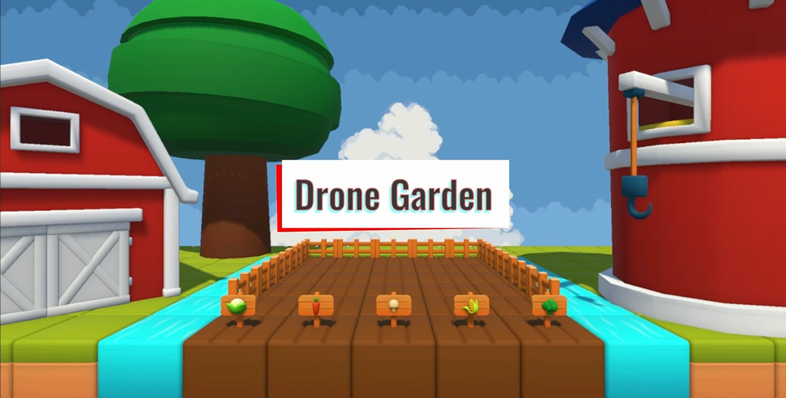
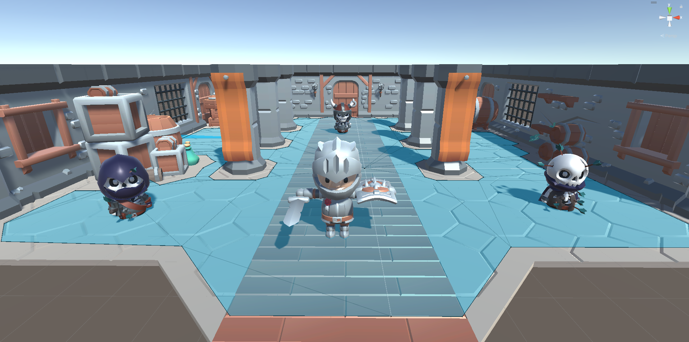
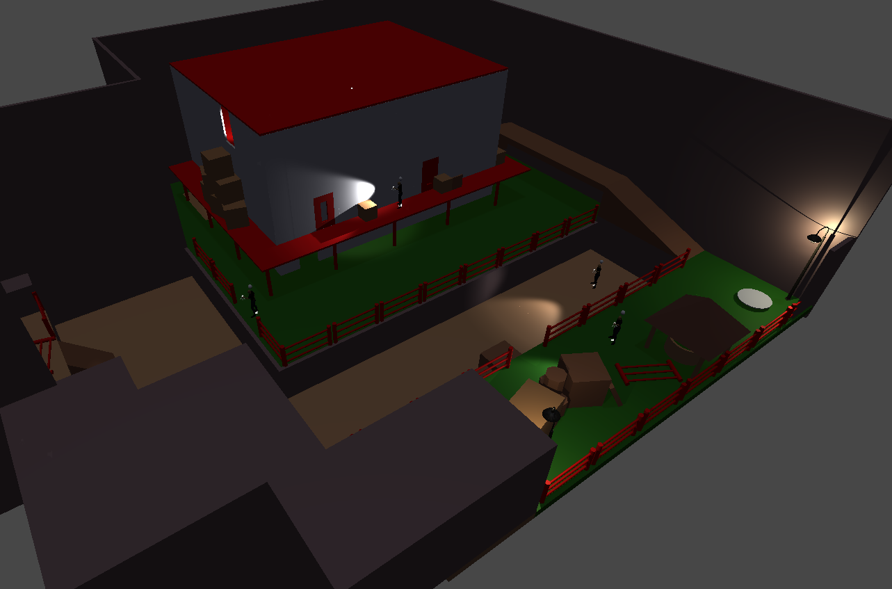
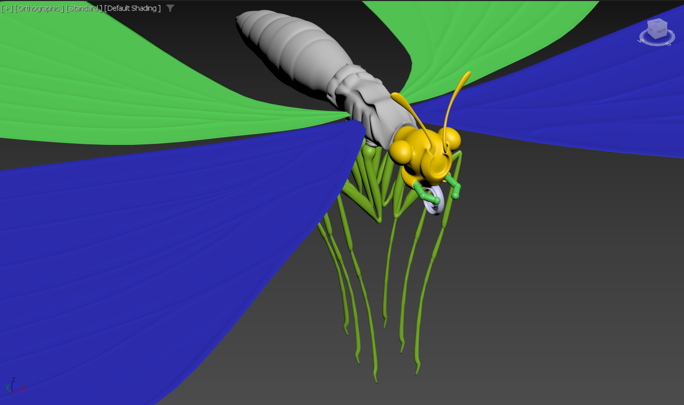
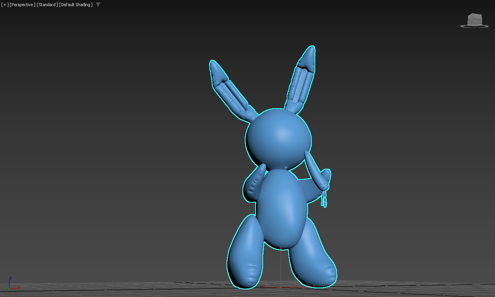

Mon Portfolio

Application Club – BIWAPI
Application web de gestion menée jusqu'à la mise en production — stage full-stack
Application de gestion – Club des Entrepreneurs Augmentés
Contexte & mission
Stage de développeur full-stack chez BIWAPI. J'ai conçu et développé, en autonomie et de zéro, une application web de gestion pour un club d'entrepreneurs : un espace unique regroupant profils, agenda, annuaire et documents, mené jusqu'à la mise en production réelle.
Architecture & fonctionnalités
-
Application monopage (SPA) : front React / TypeScript, adossé à Supabase pour la base PostgreSQL, l'authentification et le stockage de fichiers.
-
Rôles & droits : système multi-club où chaque membre a des droits précis, sécurisés jusqu'en base de données par des politiques RLS (Row Level Security).
-
Modules métier : agenda partagé (React Big Calendar), annuaire des membres, gestion électronique de documents (GED) et tableau de bord.
Mise en production & DevOps
-
Déploiement sécurisé : hébergement sur un VPS avec Supabase auto-hébergé, durcissement du serveur (pare-feu, SSH par clé) et reverse proxy Nginx + HTTPS — la base n'est jamais exposée directement.
-
Prod / préprod : deux environnements séparés et un déploiement automatisé via GitLab CI/CD.
Mise en production réelle
Application mise en ligne et présentée au club, puis transmise à un nouveau développeur pour en assurer la continuité.
Technologies : React, TypeScript, Supabase (PostgreSQL), GitLab CI/CD, Nginx, VPS.

Drone Garden
Jeu de gestion 3D — pilotage d'un drone, publié sur Itch.io
Drone Garden : Engineering & Release
Concept & Boucle de Gameplay
Gestion horticole futuriste : le joueur pilote un drone et doit optimiser la plantation et la récolte via un système de score. L'enjeu repose sur la gestion de l'urgence : les légumes non récoltés explosent, créant une pénalité et une perte de ressources.
Architecture & Systèmes Avancés
-
Finite State Machine (FSM) : Système d'états complexe pilotant les cycles de vie (Seed > Sprout > Mature > Overripe > Explode). Chaque transition est gérée par des événements pour déclencher feedbacks visuels et sonores de manière synchronisée.
-
Data-Driven (ScriptableObjects) : Centralisation des propriétés des végétaux (vitesse de pousse, valeur, meshs) permettant de modifier l'équilibrage du jeu sans altérer le code source.
-
Système d'Interaction : Implémentation du Raycasting avec filtrage de LayerMasks pour une détection précise des parcelles et une gestion fluide des actions contextuelles du drone.
UI & Pipeline de Production
-
Système d'UI Modulaire : HUD dynamique, menus de pause et écrans de fin de partie conçus avec le Canvas System d'Unity, décorrélés de la logique de jeu (Pattern Observer).
-
Workflow : Gestion de projet via Git (commits atomiques) et optimisation des ressources (LOD, compression des textures) pour une version WebGL fluide.
Disponible sur Itch.io
Le projet a été mené jusqu'à la publication d'une version jouable.
Jouer au jeuTechnologies : Unity 3D, C#, ScriptableObjects, Raycasting, Particles System, WebGL.

AltF42
Roguelike top-down low poly — projet d'équipe (Unity)
AltF42 — Roguelike top-down
Concept
Roguelike en vue de dessus, au style low poly. Le joueur incarne un chevalier explorant un labyrinthe peuplé de squelettes (magiciens, archers, guerriers). Deux armes — épée ou hache — offrent des styles de jeu et une rejouabilité différents.
Contexte & rôle
-
Cadre : projet d'équipe (4 personnes), octobre 2023, dans le cadre du cours Unity / C#.
-
Ma contribution : recherche et sélection d'assets pour un style graphique cohérent, création de modèles 3D, mise en place des animations à partir des assets, intégration audio (musique de fond, bruitages des ennemis) et développement de fonctionnalités de gameplay en C#.
Points techniques
-
Direction artistique : curation d'assets et création de modèles 3D pour garantir une cohérence visuelle low poly sur l'ensemble du jeu.
-
Animation : mise en place des cycles d'animation (déplacements, attaques) à partir des assets, reliés aux états du personnage et des ennemis.
-
Audio : intégration de la musique d'ambiance et des retours sonores des ennemis pour renforcer l'immersion.
Technologies : Unity, C#, modèles & assets 3D, gestion audio Unity.

Hidden Shadow
Jeu d'infiltration écoresponsable — level design & modélisation
Hidden Shadow — Jeu d'infiltration écoresponsable
Concept
Jeu d'infiltration sur le thème de l'écoresponsabilité : le joueur incarne une espionne chargée de récupérer des documents confidentiels sur les émissions de CO₂ d'entreprises, afin de dénoncer les abus environnementaux. Deux phases d'infiltration — extérieure puis intérieure — avec des gardes à éviter.
Contexte & rôle
-
Cadre : projet d'équipe (4 personnes), janvier – février 2024, sous Unity.
-
Ma contribution : level design des niveaux, condition de victoire, et création des modèles 3D du joueur et des ennemis (Blender & 3DS Max) avec leurs animations. Le système de détection des gardes a été développé par un autre membre de l'équipe.
Points techniques
-
Level design : conception des deux phases (extérieure et intérieure) à partir d'assets de l'Unity Asset Store, en pensant les parcours, les zones de couverture et la difficulté progressive.
-
Modélisation & animation : modèles 3D du joueur et des ennemis réalisés sur Blender et 3DS Max, animés via Mixamo.
-
Condition de victoire : mise en place de la logique de fin de niveau (récupération des documents puis extraction) déclenchant la victoire.
Technologies : Unity, C#, Blender, 3DS Max, Mixamo, Unity Asset Store.

3D Butterfly
Modélisation 3D organique — premier modèle complexe
3D Butterfly — Modélisation organique (3DS Max)
Projet
Modélisation détaillée d'un papillon sous 3DS Max, dans le cadre de l'apprentissage des techniques de modélisation 3D. Il s'agit de mon premier modèle complexe, centré sur la reproduction fidèle d'une structure organique.
Détails techniques
-
Complexité : environ 45 000 vertices, modèle non texturé — tout le détail repose sur la géométrie.
-
Ailes : nervures et motifs modélisés directement dans le maillage pour un rendu précis.
-
Anatomie : tête, thorax et abdomen modélisés avec rigueur ; trompe fidèle à la morphologie, yeux composés et palpes ajoutés pour le réalisme.
Bilan
Ce premier modèle complexe m'a permis de développer rigueur technique et sens du détail sur une forme organique exigeante. Une phase d'animation est envisagée pour prolonger le projet.
Technologies : 3DS Max (modélisation polygonale).

KOONS Rabbit
Modélisation 3D intégrée dans un jeu Unreal Engine
KOONS Rabbit — Modélisation & intégration jeu
Projet
Reproduction 3D de l'œuvre Rabbit de Jeff Koons sous 3DS Max, destinée à un musée virtuel jouable. Le modèle a ensuite été intégré dans une expérience interactive sous Unreal Engine.
Modélisation
-
Le modèle : environ 15 000 polygones, fidèle au style brillant, lisse et minimaliste de l'œuvre, avec un soin particulier sur les volumes du lapin métallique.
-
Optimisation : budget de polygones maîtrisé pour rester exploitable en temps réel dans un moteur de jeu.
Intégration jeu (Unreal Engine)
-
Musée virtuel jouable : le modèle est intégré dans un environnement interactif sous Unreal Engine, où il devient un élément de gameplay.
-
Mini-mécanique : le joueur doit trouver une carotte et la donner au lapin — un objectif simple qui rend l'œuvre vivante et l'expérience ludique.
Bilan
Ce projet relie art contemporain et création numérique : de la modélisation optimisée jusqu'à l'intégration dans un moteur de jeu, en passant par une petite boucle de gameplay.
Technologies : 3DS Max, Unreal Engine.